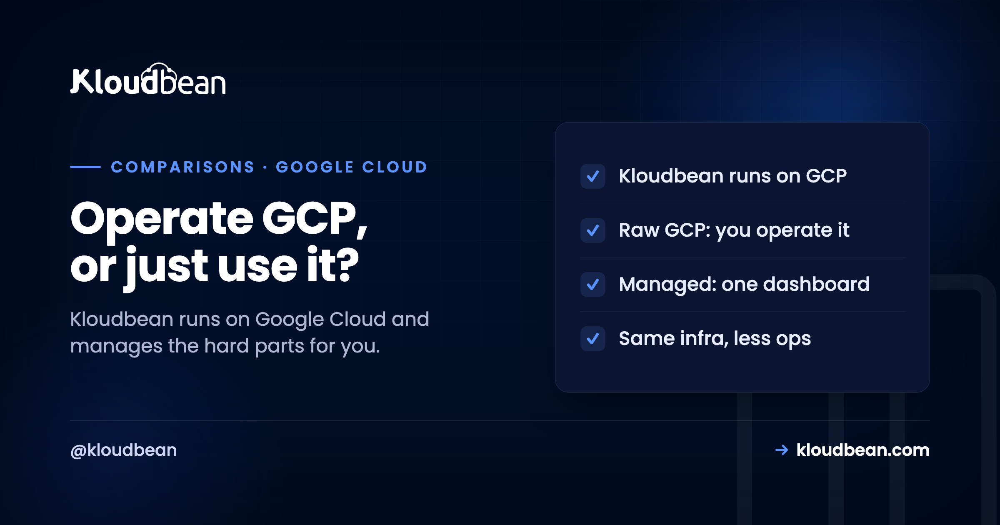

Google Cloud vs Kloudbean: Raw Hyperscaler, or Managed on Top of It

Most "X vs Kloudbean" comparisons pit two separate providers against each other. This one is different, and the difference is the whole point: Kloudbean runs on Google Cloud, among other clouds. So framing it as "Google Cloud or Kloudbean" is slightly wrong. The real question is whether you want to operate Google Cloud yourself, wiring up its services with your own expertise, or have that same GCP foundation delivered to you managed, from one dashboard. Both are legitimate answers, and which is right depends far more on your team than on the technology. This is the honest version of that decision.
Google Cloud is a hyperscaler with an enormous service catalog and global scale, but using it raw means you operate it: configuring IAM, networking, Cloud SQL, load balancers, and billing yourself, which usually needs cloud expertise or a DevOps team. Kloudbean runs on Google Cloud (among seven clouds) and delivers it managed: one-click servers and managed databases, automatic backups, free SSL, and predictable pricing from a single dashboard. Choose raw GCP if you have a cloud team, need GCP-specific services like BigQuery, or operate at hyperscale. Choose Kloudbean if you want to ship and run applications on that same class of infrastructure without becoming a Google Cloud expert. It is not GCP versus Kloudbean so much as GCP raw versus GCP managed.
They are not actually opposites
Start here, because it reframes everything that follows and it is the honest foundation of the comparison.
Google Cloud is one of the clouds Kloudbean runs on. When you launch a Kloudbean server or managed database on Google Cloud, you are using GCP's infrastructure, the same data centres, the same underlying reliability, with Kloudbean as the managed layer on top. So this is not a story about one platform being better hardware than the other; the hardware can be identical. It is a story about who does the operating. Raw Google Cloud hands you the full, powerful toolbox and expects you to assemble the solution. Kloudbean takes that toolbox and hands you the finished, managed result: a running server, a backed-up database, SSL that renews itself. The question, then, is not which infrastructure you trust, it is how much of the operating you want to do yourself.
What raw Google Cloud gives you
One measured line, because it's true: GCP's service catalogue is deep, and if your workload needs BigQuery or Google's ML tooling specifically, that depth is a real advantage nothing else replaces.
Raw GCP gives you compute, storage, data warehousing, ML tooling, and a global footprint of regions. What it doesn't give you is any of it assembled. That power comes with a cost that isn't on the price sheet: complexity. You configure identity and access management, design your own virtual private cloud and networking, provision and tune Cloud SQL, set up load balancers and health checks, and make sense of a billing model with many line items and egress charges. None of that is impossible, but it is a job, often a full-time one, and for many teams it is a job they did not want and are not staffed for.
What managed-on-GCP changes
Kloudbean's proposition is to keep the GCP foundation and remove the operating burden, which changes the day-to-day quite a lot.
Instead of assembling services, you launch a server in a click and a managed database in another, both provisioned on Google Cloud, both maintained for you. Seven engines are one-click on the same screen, MySQL, MariaDB, PostgreSQL, Redis, Memcached, Elasticsearch and MongoDB, rather than a separate GCP product and a separate learning curve per engine. The database is patched, allow-listed to your app server's IP, and backed up automatically, with on-demand backups when you want one before a risky change. SSL is free and auto-renewing. Shorewall and Fail2ban are on the server from the start. The whole stack, servers, managed databases, object storage, a load balancer, lives behind one dashboard and one login, rather than being scattered across a dozen GCP consoles. And because Kloudbean also runs on six other clouds, you are not locked to Google Cloud, you can place a workload on GCP for the Dammam region and another on a different cloud, all from the same panel. The trade you are making is deliberate: you give up the deepest, most granular control of raw GCP, and in return you get the same infrastructure without needing a cloud team to run it. For most teams that are building products rather than operating infrastructure, that is a very good trade.
The cost picture
Pricing is where the two models feel most different day to day, even when the underlying compute is the same.
Raw Google Cloud is metered in fine detail, which is powerful but hard to predict: compute, storage, network, and a range of per-service charges, plus egress fees for data leaving the cloud, add up to a bill that many teams find genuinely difficult to forecast, and occasionally a nasty surprise. Kloudbean's model is deliberately simpler: predictable plans for the server, managed databases alongside, and, notably, no egress fees on its object storage, so data transfer out is not metered there. That predictability is worth real money to a small team, not because the raw compute is cheaper, but because you can budget for it and you are not paying a cloud engineer to optimise and watch the bill. The honest framing: raw GCP can be cost-optimised to the last cent by someone who knows how, while Kloudbean trades some of that theoretical optimisation for a bill you can actually predict. Which is better depends on whether you have, and want to pay for, that someone. There is more on the models in cloud hosting pricing explained.
Raw GCP or managed: a side-by-side
The decision comes down to who operates the infrastructure, and the table makes the trade concrete.
| Raw Google Cloud | Kloudbean (managed, on GCP and more) | |
|---|---|---|
| Setup | Configure IAM, VPC, Cloud SQL, load balancers | One-click server and managed database |
| Who operates it | You, or your cloud team | Managed for you |
| Interface | Many consoles and services | One dashboard for the whole stack |
| Databases | Self-provisioned and tuned | Managed, one-click, auto-backed-up |
| Pricing | Fine-grained metering, egress fees | Predictable plans, no object-storage egress |
| Clouds | Google Cloud only | Seven clouds, including GCP |
| Best for | Cloud teams, GCP-specific services, hyperscale | Shipping apps without operating a hyperscaler |
Which console are you going to be living in?
That's the practical question, and it splits by workload rather than by vendor loyalty.
Some work only exists in the raw console. A data warehouse on BigQuery, a training pipeline on Vertex, anything wired into a Google service with no equivalent anywhere: you'll be in the GCP console for that piece, and no managed layer pretends otherwise. That's a scope boundary, not a verdict on either option.
The application tier is a different story. Servers, databases, object storage, TLS, deploys and cron are the same handful of problems for almost everyone, and they're the part that eats an engineer's week. Kloudbean provisions that tier onto Google Cloud itself, Dammam in Saudi Arabia included (see the Dammam region guide), so choosing the managed layer isn't choosing away from Google's infrastructure. You're on the same regions, with someone else holding the pager for the OS and the stack.
And these aren't mutually exclusive. Running an analytics workload directly in GCP while your app tier runs managed on GCP is a normal, sane split. The deciding question isn't features. Do you want to operate the cloud, or use it? Managed versus unmanaged hosting works through the same fork in more detail.
What this choice doesn't decide
Worth being clear about, because plenty of infrastructure decisions get made in the hope of fixing something the infrastructure never touched.
| Stays yours either way | Why the platform can't take it |
|---|---|
| Schema design and slow queries | A missing index costs the same on a managed database as on a self-tuned one. Managed means patched and backed up, not optimised for your access patterns. |
| Application-level access control | Cloud IAM and platform permissions govern who touches infrastructure. Who can read which row in your app is your code's job. |
| Whether your backups actually restore | Automatic backups exist on both sides. A restore you've never tested is a belief, not a recovery plan. Test one this quarter. |
| Your app crashing on boot | No host fixes this, ours included. A managed stack starts your process faithfully, including the broken build. |
| Compliance obligations | Infrastructure controls and data residency are provided. Being compliant is assessed against your organisation, never against your host. |
Two limits on the managed side to know before you decide, rather than after. The managed layer deliberately doesn't expose every low-level GCP knob, which is the trade for not having to configure them. And a few things are scoped differently: private networking, VPC and Kubernetes come with Enterprise, while a standard managed database is locked down by IP allow-listing rather than a private network, and a database primary lives in one region, with read replicas able to sit elsewhere. If your architecture requires the low-level version of any of that, you want to know now.
More on google Cloud vs Kloudbean
For the same managed-versus-raw decision against another cloud, DigitalOcean vs Kloudbean, and the broader principle in managed vs unmanaged hosting. For how the pieces work, how cloud hosting works; for pricing models, cloud hosting pricing explained. For the GCP region behind in-Kingdom hosting, the Dammam region guide, and for managed-platform options generally, managed-cloud alternatives.
A rehoming, not a rewrite.
Migration assistance is free and there is a free trial to prove the setup first. You keep Git-based deploys, get managed databases beside the app, and pay a flat monthly price on the cloud you choose.
- ✓ Free migration assistance
- ✓ Free trial
- ✓ Seven cloud providers
- ✓ Flat monthly price
- ✓ Managed databases
- ✓ Git deploy
Plans from $8/mo, or from $36/mo for in-Kingdom hosting in Dammam · Free migration assistance · Free trial
FAQ
Is Kloudbean an alternative to Google Cloud?
Not exactly, because Kloudbean runs on Google Cloud, among seven clouds. It is better described as a managed layer on top of GCP rather than a replacement for it. When you launch on Google Cloud through Kloudbean, you are using GCP's infrastructure with the operating handled for you. So the choice is less "GCP or Kloudbean" and more "operate Google Cloud yourself, or use that same infrastructure managed from one dashboard."
Does Kloudbean run on Google Cloud?
Yes. Google Cloud is one of the seven clouds Kloudbean supports, so you can provision servers and managed databases on GCP infrastructure directly through Kloudbean, including the in-Kingdom Dammam region for Saudi data residency. Because it also supports six other clouds, you are not locked to Google Cloud and can place different workloads on different clouds from the same dashboard, which raw GCP alone does not offer.
When should I use raw Google Cloud instead of Kloudbean?
Use raw GCP if you have a cloud-engineering or DevOps team to operate it, if your workload needs a specific Google service like BigQuery or its ML tooling, or if you run at a scale where granular, low-level control justifies the complexity. In those cases the depth and configurability of the hyperscaler is a genuine advantage. If none of those apply, the operating burden of raw GCP is usually more than a smaller team wants to take on.
Why is Google Cloud billing so hard to predict?
Because it meters in fine detail across many services, compute, storage, network, and per-service charges, plus egress fees for data leaving the cloud. That granularity is powerful for optimisation but hard to forecast, and it occasionally produces surprise bills. Kloudbean uses predictable plans instead, with no egress fees on its object storage, trading some theoretical cost-optimisation for a bill you can actually budget, which matters most to teams without a dedicated cloud-cost engineer.
Do I lose Google Cloud's power by using Kloudbean?
You give up the deepest, most granular control and the full breadth of GCP's service catalog, which is the deliberate trade for simplicity. What you keep is the underlying GCP infrastructure and reliability, now delivered as managed servers and databases from one dashboard. For teams building and running applications rather than operating infrastructure, that trade is usually worthwhile. For teams that genuinely need low-level control or GCP-specific services, using GCP directly remains the better fit.
Is Kloudbean cheaper than Google Cloud?
It is more predictable rather than necessarily cheaper on raw compute. A skilled cloud engineer can optimise raw GCP to a very low cost, but that requires expertise and ongoing attention. Kloudbean's predictable plans and lack of object-storage egress fees make the total cost easier to budget and often lower once you account for the engineering time raw GCP demands. The honest comparison includes the cost of the people needed to run each option, not just the infrastructure line.
Can I move between clouds on Kloudbean?
Yes. Because Kloudbean supports seven clouds, including Google Cloud, AWS, DigitalOcean, and others, you can run workloads on different clouds from the same dashboard rather than committing entirely to one. That flexibility is something raw Google Cloud does not provide on its own, and it means a decision to use GCP for one workload, such as in-Kingdom hosting on Dammam, does not lock your entire stack to a single provider.
Does using Kloudbean on GCP give me in-Kingdom Saudi hosting?
Yes. Kloudbean can provision on Google Cloud's Dammam region, which is physically located in Saudi Arabia, so servers, managed databases, and backups stay in-Kingdom. That is one of the clearest cases where running GCP managed through Kloudbean is convenient: you get the Saudi region for data residency plus the managed experience, without configuring the underlying Google Cloud services yourself. The region details are in the Dammam region guide.